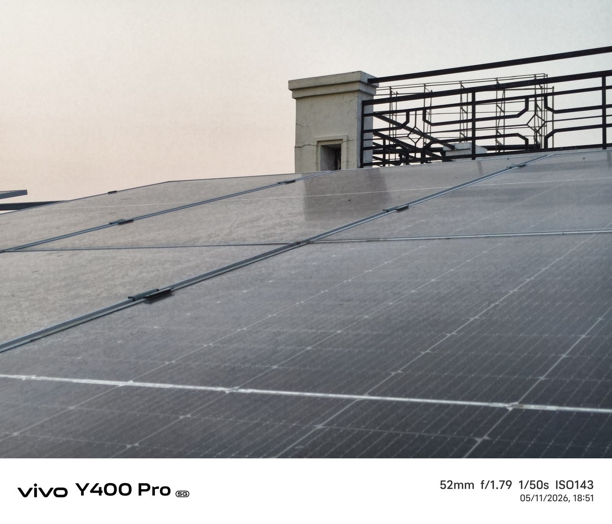
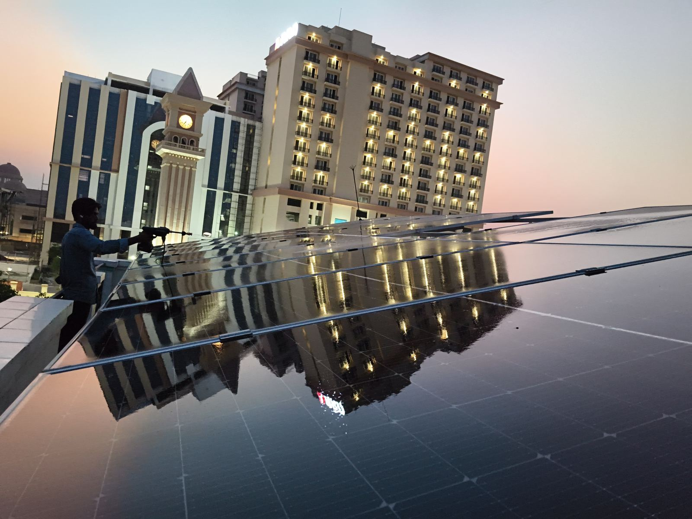
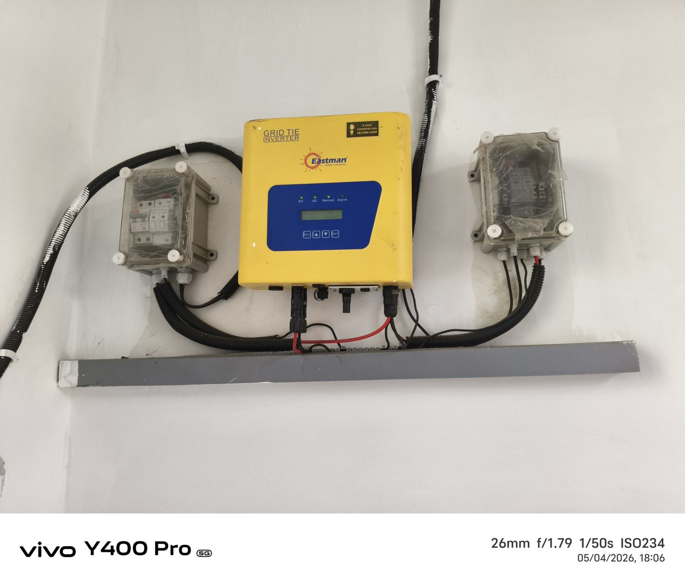

Area focus
Homes and nearby mixed-use rooftops
This page is meant for customers in Kamta Chauraha who want local cleaning support, real work proof, and a simpler way to book solar panel service in their area.
Kamta Chauraha Service Page
IMSOLARCARE provides rooftop solar cleaning and maintenance support for homes, apartments, and nearby mixed-use properties in Kamta Chauraha. This page uses real local work photos and video so customers can see the kind of service result and rooftop condition involved.
Kamta Chauraha rooftops often collect visible dust because of road movement, open exposure, and delayed cleaning. Local service proof helps customers trust the result faster.
Area focus
This page is meant for customers in Kamta Chauraha who want local cleaning support, real work proof, and a simpler way to book solar panel service in their area.
Common reasons to book
Bookings usually happen when the panels look visibly dusty, rooftop cleaning has been delayed, or the customer wants routine upkeep instead of guessing the right schedule.

Before Cleaning
Actual local photo from Kamta Chauraha showing visible dust and the kind of panel surface condition customers often want cleaned.

After Cleaning
Actual after-service photo showing the cleaner rooftop finish and clearer panel presentation after the visit.
Actual local rooftop cleaning footage that helps customers understand how the team works during a real service visit.

Customers who need repeat upkeep or inverter-side follow-up can also discuss AMC and maintenance support during booking.
FAQ
Yes. This page supports Kamta Chauraha intent, and nearby localities can also be confirmed during booking or WhatsApp enquiry.
FAQ
Yes. If the rooftop needs repeat cleaning, AMC-style support or periodic maintenance can be discussed after the first service conversation.
FAQ
Yes. This page includes real work photos and service video from a local rooftop job, which helps customers judge the service more confidently.
Nearby area pages
Gomti Nagar, Indira Nagar, Jankipuram, and the Lucknow main service page help nearby customers compare local support routes.
Useful links
See the pricing page, before and after gallery, services page, and contact page before booking.